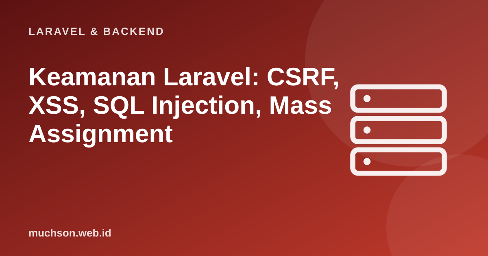

Beranda › Artikel › Laravel & Backend
Laravel & BackendKeamanan Laravel: CSRF, XSS, SQL Injection, Mass Assignment
Laravel memberi banyak perlindungan secara bawaan, tetapi hanya bila dipakai sebagaimana mestinya. Hampir semua kerentanan di aplikasi Laravel muncul ketika pengembang menghindari mekanisme bawaan: SQL mentah dengan input pengguna, mencetak data tanpa escape, atau mematikan pemeriksaan "sementara". Materi ini memetakan ancaman utama dan cara Laravel menanganinya.
Sebaiknya sudah paham: dasar Laravel, validasi, autentikasi

Setelah membaca dan mencoba materi ini, Anda mampu:
- menjelaskan CSRF, XSS, dan SQL injection serta cara Laravel mencegahnya
- mengenali mass assignment dan unggahan berkas berbahaya
- mengamankan konfigurasi produksi (APP_DEBUG, .env, kunci)
- menerapkan pembatasan laju, header keamanan, dan HTTPS
- memakai daftar periksa keamanan sebelum rilis
Kode PHP/Laravel di artikel ini mengikuti dokumentasi Laravel (versi 11 dan seterusnya, PHP 8.2 atau lebih baru). Bagian "cara kerja di balik layar" dijalankan sungguhan dengan Python atau JavaScript agar konsepnya dapat dibuktikan.
Peta ancaman (OWASP) dan perlindungan Laravel
| Ancaman | Gambaran | Perlindungan bawaan | Yang harus Anda jaga |
|---|---|---|---|
| SQL injection | Input pengguna menjadi bagian perintah SQL | Query builder dan Eloquent memakai binding parameter | Jangan menyisipkan input ke whereRaw/DB::raw tanpa binding |
| XSS | Skrip jahat dari input tampil ke pengguna lain | Blade {{ }} meloloskan HTML | Hati-hati dengan {!! !!}, HTML dari pengguna, dan atribut href javascript: |
| CSRF | Situs lain memicu aksi atas nama pengguna yang login | Token @csrf diperiksa middleware | Jangan mengecualikan rute dari CSRF tanpa alasan; API token memakai mekanisme lain |
| Mass assignment | Pengguna menyisipkan kolom tak terduga | $fillable/$guarded | Gunakan validated(), bukan all() |
| Broken access control | Mengakses data milik orang lain (IDOR) | Policy dan Gate tersedia | Memanggil authorize() di setiap aksi |
| Konfigurasi salah | Debug aktif, .env terbuka | — | APP_DEBUG=false, root web di public/ |
SQL injection: diperagakan
import sqlite3
db = sqlite3.connect(":memory:")
db.executescript("""
CREATE TABLE produk (id INTEGER PRIMARY KEY, nama TEXT, harga INTEGER, rahasia TEXT);
INSERT INTO produk VALUES (1,'Kopi',65000,'margin 40%'),(2,'Teh',40000,'margin 35%');
""")
def cari_rentan(kata): # setara DB::select("... LIKE '%$kata%'") dengan input mentah
return db.execute("SELECT id, nama, harga FROM produk WHERE nama LIKE '%" + kata + "%'").fetchall()
def cari_aman(kata): # setara Produk::where('nama', 'like', "%$kata%") (binding)
return db.execute("SELECT id, nama, harga FROM produk WHERE nama LIKE ?", ("%" + kata + "%",)).fetchall()
serangan = "x' UNION SELECT id, rahasia, harga FROM produk --"
print("normal :", cari_rentan("Ko"))
print("diserang:", cari_rentan(serangan), "<- kolom rahasia bocor!")
print("aman :", cari_aman(serangan))normal : [(1, 'Kopi', 65000)]
diserang: [(1, 'margin 40%', 65000), (2, 'margin 35%', 40000)] <- kolom rahasia bocor!
aman : []
<?php
// AMAN: query builder / Eloquent memakai binding otomatis
Produk::where('nama', 'like', '%' . $kata . '%')->get();
// BERBAHAYA
DB::select("SELECT * FROM produk WHERE nama LIKE '%$kata%'"); // JANGAN
Produk::whereRaw("nama LIKE '%$kata%'")->get(); // JANGAN
// Bila perlu SQL mentah, selalu pakai tanda tanya/binding bernama
Produk::whereRaw('nama LIKE ?', ['%' . $kata . '%'])->get();
// Nama kolom/urutan dari pengguna tidak bisa di-bind: whitelist
$kolom = in_array($request->urut, ['nama', 'harga', 'created_at'], true) ? $request->urut : 'nama';
Produk::orderBy($kolom)->get();XSS: mencetak data dengan aman
{{-- AMAN: dilolos otomatis --}}
<p>{{ $komentar->isi }}</p>
{{-- BERBAHAYA: mencetak mentah; hanya untuk HTML yang Anda hasilkan atau sudah dibersihkan --}}
<p>{!! $komentar->isi !!}</p>
{{-- Bila pengguna boleh memakai HTML (editor kaya), bersihkan dengan pustaka daftar-putih seperti HTMLPurifier
atau konversi dari Markdown yang aman sebelum mencetak. --}}
{{-- Hati-hati dengan URL dari pengguna: href="javascript:..." tetap berbahaya walau teks dilolos --}}
<a href="{{ $profil->situs }}">Situs</a> {{-- validasi skema: hanya http/https --}}
{{-- Data ke JavaScript: gunakan @json agar aman --}}
<script>const data = @json($data);</script>CSRF: mengapa token diperlukan
import hmac, hashlib, secrets
# Gagasan token CSRF: nilai rahasia per sesi yang HANYA diketahui halaman Anda
kunci_server = secrets.token_bytes(32)
def token_untuk(sesi_id): return hmac.new(kunci_server, sesi_id.encode(), hashlib.sha256).hexdigest()
sesi_ani = "sesi-ani-123"
token_ani = token_untuk(sesi_ani) # disisipkan ke form lewat @csrf
def terima_transfer(sesi_id, token_kiriman):
sah = hmac.compare_digest(token_untuk(sesi_id), token_kiriman or "")
return "diproses" if sah else "419 DITOLAK (token tidak cocok)"
print("form asli situs :", terima_transfer(sesi_ani, token_ani))
print("situs jahat (tanpa token):", terima_transfer(sesi_ani, None)) # browser Ani mengirim cookie sesi, tetapi token tidak diketahui penyerang
print("situs jahat (token tebakan):", terima_transfer(sesi_ani, "abc123"))form asli situs : diproses
situs jahat (tanpa token): 419 DITOLAK (token tidak cocok)
situs jahat (token tebakan): 419 DITOLAK (token tidak cocok)
Mass assignment dan unggahan berkas
<?php
// Mass assignment: BERBAHAYA
User::create($request->all()); // penyerang menambah is_admin=1 di permintaannya
// AMAN
User::create($request->validated()); // hanya kolom yang divalidasi
// Dan $fillable di model sebagai lapisan kedua.
// Unggahan berkas: validasi jenis dan ukuran, jangan percaya nama atau ekstensi dari klien
$request->validate(['dokumen' => ['required', 'file', 'mimes:pdf,jpg,png', 'max:5120']]);
$path = $request->file('dokumen')->store('dokumen', 'private'); // nama acak dibuat Laravel; simpan di luar public
// Sajikan lewat controller dengan pemeriksaan otorisasi, atau tautan bertanda tangan sementara:
// Storage::temporaryUrl($path, now()->addMinutes(10));Konfigurasi produksi
Keamanan adalah proses, bukan fitur. Ikuti pengumuman keamanan Laravel dan PHP, perbarui versi yang masih didukung (versi lama berhenti menerima perbaikan keamanan), dan jangan pernah mengklaim "aman" tanpa pengujian: tinjauan kode, pemindaian kerentanan, dan uji penetrasi bagi aplikasi yang menyimpan data penting.
1. Temukan kerentanan: User::create($request->all()) pada form profil.
2. Mengapa nama kolom orderBy dari pengguna tidak aman walau memakai Eloquent?
3. Mengapa pesan "surel atau kata sandi salah" lebih baik dari pesan terpisah?
4. Apa yang bisa terjadi bila folder unggahan dapat mengeksekusi PHP?
- Laravel melindungi dari SQL injection (binding), XSS (Blade {{ }}), dan CSRF (@csrf) bila mekanismenya dipakai.
- Waspadai raw SQL, {!! !!}, all() ke create(), unggahan berkas, dan IDOR.
- Produksi: APP_DEBUG=false, root di public/, HTTPS, throttle, composer audit, header keamanan.
- Keamanan berkelanjutan: perbarui versi, uji, dan pantau.
Tanya jawab
Apakah Laravel aman secara default?
Apa itu Content Security Policy?
Bagaimana menguji keamanan?
Referensi
- Laravel: Security (CSRF, Encryption, Hashing)
- OWASP Top 10
- OWASP Cheat Sheet Series
- Laravel: Eloquent (Mass Assignment)